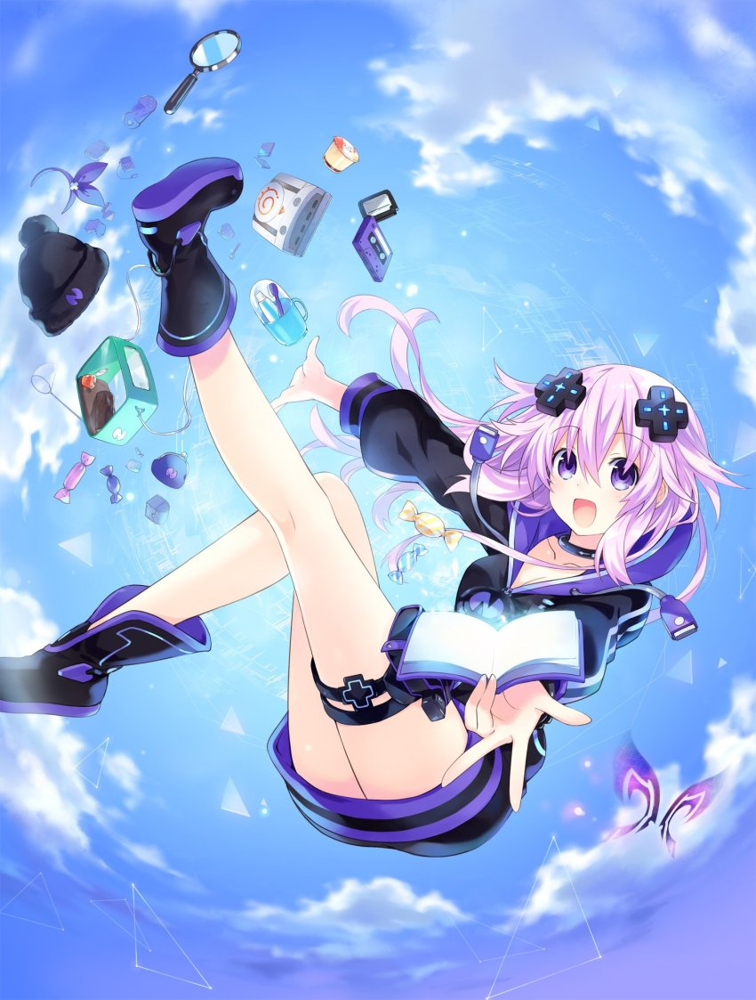
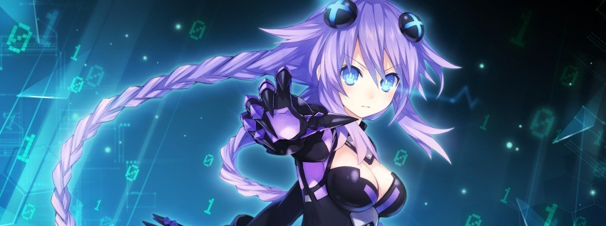
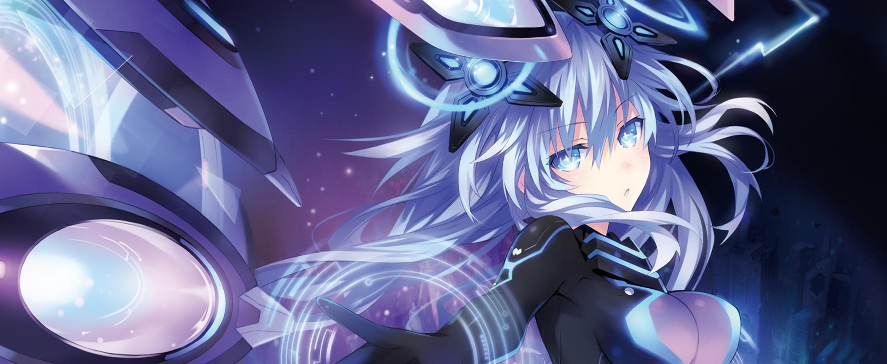

Neptune
Purple Heart
"It's dangerous to go alone. Take Nep!"
Profile
The CPU of Planeptune, the Land of Purple Progress. Neptune's the protag here, and the main muse, so you'd best be treating me-- I mean, her with respect, ya hear?
At some point, Neptune was hit with some kind of weird energy, which gave her these crazy strong abilities! But maaan, does it tire her out quick. . .
Being the awesome protag she is, Neptune uses a single sword (usually made of wood) as her weapon of choice!
Forms
Older Form
Neptune obtained this transformation one Halloween night, when some unknown force completely transformed her body!
In this form, Neptune's quite a bit stronger, and she gets dual blades and a pistol! Which is super cool!
Her childlike innocence is still there, though! It's everything you loved about the original Neptune, just in a bigger package!
. . .What do you mean, "that's just Ultra Dimension Neptune"?
Purple Heart
Neptune's Goddess Form! She's super powerful in this form and the only thing that can really match her full power is another CPU!
Neptune gets a heck of a lot mature in this form, and is the most level-headed CPU out of the main four. Her whole personality does a complete 180!
Despite all that, and despite ruling over Planeptune for many, many years, she's still pretty rough around the edges even in this form, especially when compared to her Hyper Dimension counterpart.
Even Neptune isn't sure what the full extent of her power is. . .
As Purple Heart, she pretty much always uses her super duper powerful sword that cuts through anything like butter, and like butter like water, and through water like air!
NEXT Purple
Neptune is able to access an imperfect NEXT Form on certain occasions.
She's not able to activate this form if she is even a little bit Corrupted, and she's not even sure how it's invoked otherwise. Usually it's a mixture of luck and determination.
Most of Neptune's knowledge about NEXT Form is from what she's heard from Hyper Dimension's Neptune, and even so, that knowledge is heavily limited.
NEXT Purple's strength is comparable to Neptune in her Corrupted State, but her lack of experience in this form makes it an unwise decision to use in most circumstances.
Unique Abilities
Game Index
Neptune can steal the powers of video game characters to use for herself!
If the power she steals is from a game series published from Planeptune (SEGA), Neptune will be able to use it with perfect efficiency.
Her Older Form also increases her Game Index proficiency, and allows her to steal gun-wielding characters' abilities, too.
Corruption/Corrupted State
Neptune's Corruption is her manifested anger turned into power. This happened as a side-effect of Neptune obtaining her Older Form.
If Neptune's Corruption gets to a state where she can't keep it under control any longer, she enters her Corrupted State.
In Corrupted State, Neptune's strength increases exponentially, surpassing even the strongest opponent or weapon, and her vision and mind become totally clouded, unable to feel anything other than pure, unadulterated anger.
However, since she feeds directly on her Corruption, Neptune only has a short amount of time in her Corrupted State if it isn't being constantly fuelled. Exiting her Corrupted State usually makes Neptune collapse from exhaustion.
Corrupted State completely locks out Neptune's Goddess Form, and she's unable to become Corrupted if she's currently in it.